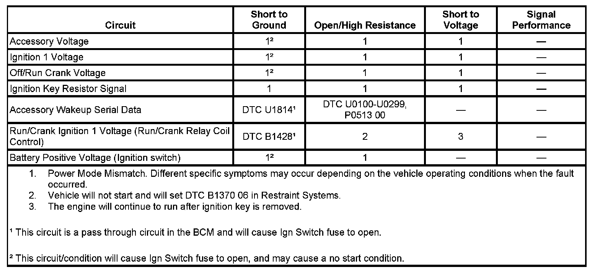
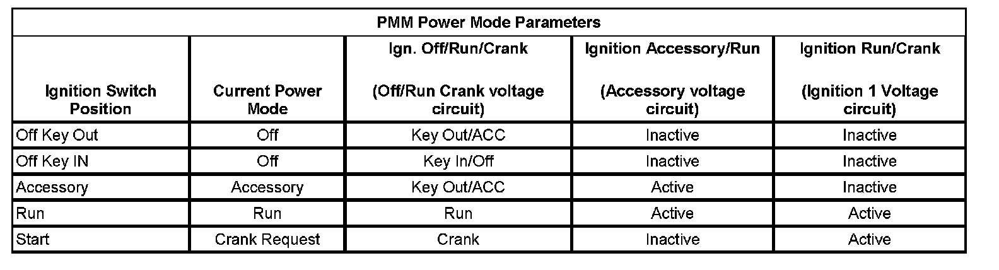
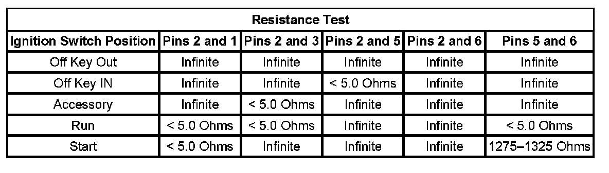

Power Mode Mismatch
POWER MODE MISMATCH
DIAGNOSTIC INSTRUCTIONS
- Perform the Diagnostic System Check - Vehicle prior to using this diagnostic procedure. Initial Inspection and Diagnostic Overview
- Review Strategy Based Diagnosis for an overview of the diagnostic approach.
- Diagnostic Procedure Instructions provides an overview of each diagnostic category.

DIAGNOSTIC FAULT INFORMATION
CIRCUIT/SYSTEM DESCRIPTION
This vehicles power mode master (PMM) is the body control module (BCM). The ignition switch is a low current switch with multiple discrete ignition switch signals to the PMM for determination of the power mode. The PMM receives the ignition switch signals, and additionally a reference voltage signal from the BCM, through the ignition switch, and back to the BCM. There are redundancies within the PMM system that can allow operation of certain subsystems when there are faults in the ignition switch circuits. Other information such as serial data input from other modules and DTCs is also used to determine what power mode signals and information is transmitted by the PMM. The BCM logic uses all this information to identify the operators desired power mode and activate specific discrete signals, and serial data messages for the operation of many different subsystems as necessary. Other modules which have switched voltage inputs may operate in a default mode if the PMM serial data message does not match what the individual module can see from its own connections.
The PMM will activate relays and other direct outputs of the PMM as needed according to the calculated power mode. Several relays controlled by the BCM are switched ignition voltage outputs the are pass through circuits within the BCM directly from the ignition switch. If these circuits short to ground, the fuse to the ignition switch will open.
Some system functions may operate one time and not the next with a specific fault in the ignition switch circuits depending on the vehicle operating conditions when the fault occurred. Some examples are as follows:
Vehicle Conditions
- Vehicle running or not running
- Multiple circuit faults
- Ignition key position
- Transmission gear selected
System Action
- The vehicle may or may not start
- Instrument panel indicators may illuminate or not illuminate at inappropriate times
- Remote start may operate incorrectly
- Ignition key may not return to OFF
- Specific retained accessory power (RAP) functions may operate while others do not
DIAGNOSTIC AIDS
- A short to ground in the accessory wakeup serial data circuit will cause an open fuse to the ignition switch. DTC U1814 should be current.
- A short to ground in the run/crank ignition 1 voltage circuit of the run crank relay will cause an open fuse to the ignition switch. DTC B1428 should be current.
- The power modes and controls are determined using BCM logic. Comparing the Body Control Module Power Mode data display parameters listed in Circuit/System Verification will determine if there is a power mode fault.
CIRCUIT/SYSTEM VERIFICATION
PMM Power Mode Parameters:

1. Verify that the following DTCs are not set: U1814, B1428.
- If either of the DTCs are set, refer to Diagnostic Trouble Code (DTC) List - Vehicle. Diagnostic Trouble Code Descriptions
2. With a scan tool, access Body Control Module, Power Mode data display list and compare all parameters listed with the corresponding ignition key position. The PMM Power Mode Parameters table below illustrates the correct state of these input parameters (circuits) in correspondence to the ignition switch position. The circuits which the individual parameters are related to are in parentheses.
- If any parameters are incorrect in any key position, proceed to the Circuit/System Testing or Component Testing below.
CIRCUIT/SYSTEM TESTING
IMPORTANT: You must perform the Circuit/System Verification before proceeding with Circuit/System Testing.
1. Inspect the Ign Switch fuse for open. The fuse should be OK.
- If the fuse is open, test the following circuits for a short to ground, if all circuits test OK, replace the BCM.
- Battery positive voltage of the ignition switch
- Accessory voltage
- Off/Run crank voltage
- Ignition 1 voltage
2. Disconnect the ignition switch connector.
3. Test for battery positive voltage between the battery positive voltage circuit of the ignition switch and ground.
- If less than battery positive voltage, repair the circuit for an open/high resistance
4. IMPORTANT: The ignition switch component test must be preformed before proceeding with this test to verify the integrity of the switch.
Perform the ignition switch component test.
- If the ignition switch fails, replace the ignition switch.
5. Ignition OFF, disconnect BCM connector C1, test for less than 1 volt between the following circuits of the BCM and ground.
6. Ignition key out, test for less than 1 volt between the following circuits of the BCM and ground.
- Ignition key resistor signal
- Off/Run crank
- Accessory voltage
- Ignition 1 voltage
- If more than 1 volt, repair the circuit for a short to voltage.
7. Test for less than 1 ohm of resistance between the BCM and the ignition switch on the following circuits.
- Ignition key resistor signal
- Off/Run crank
- Accessory voltage
- Ignition 1 voltage
- If greater than 5 ohms, repair the circuit for open/high resistance
8. Test for infinite resistance between the ignition key resistor signal circuit of the BCM and ground.
- If less than infinite resistance, repair the signal circuit for a short to ground.
9. Replace the BCM.
COMPONENT TESTING
Ignition Switch
Resistance Test:

Using the Resistance Test above, check the resistance between the pins of the ignition switch listed in each switch position listed.
- If any reading is other than specified, replace the ignition switch.
REPAIR INSTRUCTIONS
Perform the Diagnostic Repair Verification after completing the repair.
- Control Module References for module replacement, setup, and programming
- Ignition and Start Switch Replacement Verification Tests Programming and Relearning